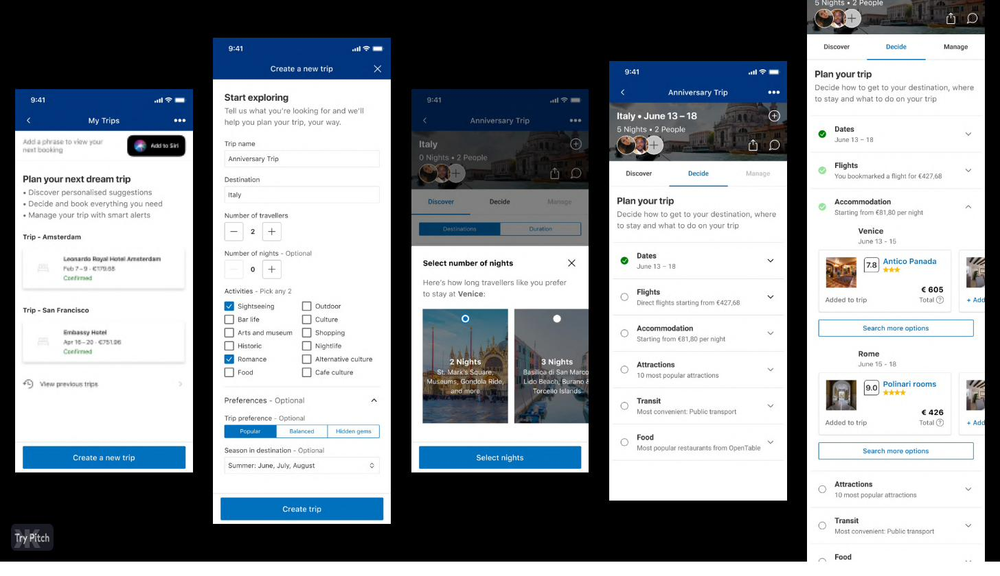

Booking.com · Sr Design Manager · 2019–2021 · Amsterdam
Shipping two hackathon concepts to production — group travel planning and live event discovery
Led two product teams from ideation through cross-brand alignment to live features used by millions of Booking.com travelers globally.
The situation
Booking.com operates within the Booking Holdings portfolio — a network that includes Kayak, Priceline, Agoda, and Rentalcars. In practice, that means product decisions don't end at Booking.com's borders. Features that touch the core travel experience require alignment across brands, platforms, and engineering teams with very different timelines and priorities.
As Sr Design Manager, I led two product teams working at that intersection — responsible not just for design quality, but for getting cross-brand concepts from hackathon prototype through stakeholder alignment to production at scale.
My Trips: group travel planning
The first hackathon project was a group travel planning feature — allowing multiple travelers to coordinate a trip collaboratively inside Booking.com. The concept was simple in principle but complex in execution: a shared itinerary that could hold flights, hotels, activities, and dining recommendations, with a Discover / Decide / Manage flow that matched how groups actually plan.
We designed the end-to-end experience: trip creation, destination and activity selection, duration preferences, and a full planning dashboard that integrated with Booking.com's existing accommodation and flight inventory. The team shipped it to production — a rare outcome for a hackathon concept at a company of Booking.com's scale.

City discovery and live events
The second project tackled a different but related problem: helping travelers understand why to visit a destination, not just where to stay. We built a contextual city discovery feature that surfaced personalized reasons to visit — local attractions, neighborhoods, cultural highlights — and paired them directly with accommodation options nearby.
The most ambitious element was a live events integration: a traveler searching Amsterdam could see that Beyoncé was performing at the Johan Cruyff Arena in February, and book a hotel near the venue in the same interface. Booking.com was already the platform for accommodation — we made it the platform for the entire trip occasion.


The Connected Stay roadmap
Alongside the consumer-facing product work, I led the development of the Connected Stay roadmap — a multi-quarter planning artifact mapping the complete guest experience from booking through check-out: Check-in Android live, SSO & self-onboarding, connectivity API beta, multi-guest check-in, and kiosk pilots. It coordinated contributions from product, tech, and commercial teams across three quarters and served as the alignment layer between squads with competing priorities.

What I learned
Getting a hackathon prototype into production inside a large tech company is almost entirely an organizational problem. The design work is the easy part. The hard part is building enough trust across enough stakeholders — engineering, legal, commercial, brand partners — that they reorganize resources and accept the risk of something new.
At Booking.com, I learned to treat that stakeholder work as design work: to prototype the alignment process, test it with the people who matter most, and iterate until it moved. That skill — knowing how to make a room of skeptics into owners — is the one I carry most directly into every leadership role since.